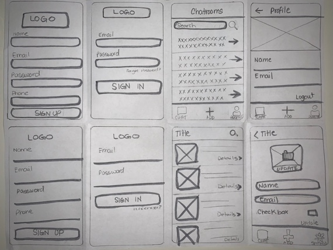
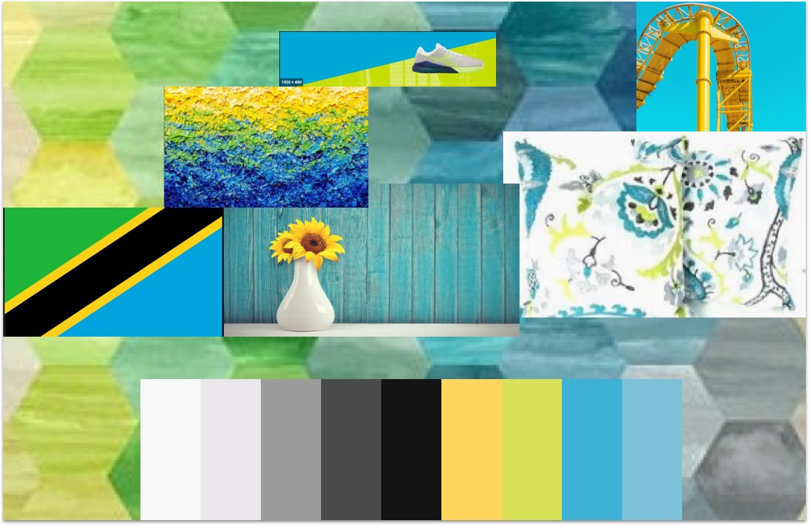

Interactive Location Chat
How can we build a bridge between physical connection and digital connection based on location?Location Chat was a 2 month-long project where we . . . The team consisted of myself, a project manager, and five developers. We completed the native app back in August 2019.
The Problem
People exist digitally but there is no way to meet someone at an event or the same place as you are? This Application could be a way to merge them both. Location chat wants to build a bridge from the digital world and the real world.To give the opportunity to meet and learn from people in your current location or event. People are uncomfortable with face to face interaction. We need to Eliminate the initial awkwardness of in-person interaction.
Design Thinking
In order to take a solution-based approach to solving the problem, I created a design process that revolved around my users. Since they were the end users, including them in the design thinking was in the best interest of everyone at stake. This process helped me observe and develop empathy with our target audience. The following diagram shows the steps taken in each phase of the project.

Stakeholder Interview
I made it a priority to schedule a meeting with the stakeholders as soon as possible. This step was extremely important to better understand the business so I could set the boundaries of the design project. I needed to define the goals and objectives and most importantly learn about the assumptions being made about the user. Understanding their business needs would give me insights and empathy to find ways to create a user experience.
User Research
After I uncovered the business objectives and goals, it was time to take out my curious detective hat and gain a clear understanding of the problem I was going to solve. I wanted to envision exactly what I was about to design.
So Why do people allow apps to access location data? I pulled a demographic data analysis to help us sort our research.


Competitive Analysis
We wanted to personalize users’ experiences with a location chat app or feature that most smartphone owners will appreciate. My main focus was to look into web/mobile messaging portal that automatically puts people in an anonymous chat rooms based on their geographical proximity, or something along those lines.
Search for Answers:
- What other companies are providing a similar platform?
- What are they doing successful?
- What is not so great about the app?
Early Sketches
Sketches are an important part of the design and development process. I wanted to demonstrate functionality, visualize the user flow and illustrate anything that would require human interaction. This step really helped me discover potential issues and solutions early, prior to starting the design and development stage. I tested out the sketches with 1-2 users before I moved on to wireframes.
Iteration for Android:
- What other companies are providing a similar platform?
- What are they doing successful?
- What is not so great about the app?

Wireframes
Wireframes is my favorite part, This is the part where the ideas from sketching got more refined and moved a step closer to the finer details of a user interface for location chat. I used Sketch to build the skeleton of the application. My goal was to focus on figuring out the layout and content placement, and solving navigation and functionality issues in a more simple and easy to use way.

Moodboard
The big question what should be the color theme for this project? I took the approach of visualization to inspiration. By visualizing the look and feel of color interacting together extremely helped me, to jump-start the design process. With the color mood board complete, I had a clear vision of the color scheme to create the hi-fidelity designs with confidence.
User Flows
In order to figure out what it will take for a user to complete a specific task on this location chat I created a visualization of each step. The user flow really helped me to document user interaction points and communicate the design process effectively with stakeholders and developers. When presenting the user flow to the team, I focused more on the experience and the needs of the user to support the features and the functionalities of the application.

User Test Plan

Recommendations Report

Project Management

Final Designs

Challenges